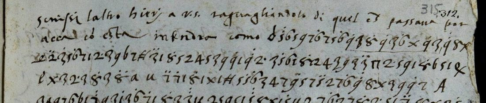

At a glanceCiphertext-only break · partial (90% of the cipher)
- The letter
- An anonymous report to Cristiano Pagni, secretary of Cosimo I de’ Medici in Florence: one leaf, recto and verso, with a line and a half in clear, then 36 lines of cipher, and a clear dateline. No signature, no place, no year.
- Where
- Archivio di Stato di Firenze, Mediceo del Principato 444, c. 315r-v; Unsolved Catalogue no. 2348 (taken out of the catalogue with this write-up). No DECODE record was found.
- The cipher
- Figures 1 to 9 and x, a figure with one dot standing for the next letter in most cases; a repeat sign; three word signs (che, in, per); nulls; and eleven capital or small-letter codes for persons and places, none with a fixed value.
- How it was read
- By Malcolm McBratney with Claude, from four transcriptions of the images (one blind, by a separate session) and an adjudication of 138 disputed signs on the images. The key was read off repeated groups, with no crib and no gloss; the leaf carries no decipherment.
- What it says
- The writer stayed on at the Marquis of Sarria’s request to watch a negotiation; a league is being talked of, with Cervia and Ravenna to be pledged for money; the French ministers are suspected of having settled with “A” and of playing for time.
- Still open
- All eleven code values; the letter h and 62 dotted signs dropped by context; 8 unread signs; the date and the writer.
- Credit
- Malcolm McBratney, working with Claude (pull request #454, issue #426): the key, the transcriptions and the reading. The count of 69 signs dropped as nulls, and the weakness of the pairing for g/h and a/b, were pointed out in review.
01 The leaf
This is c. 315 of Mediceo del Principato 444, a filza labelled “Lettere del mese di Marzo 1555”. The inventory (vol. VII, p. 396 and note 38) lists it as sender not named, undated, to Cristiano Pagni, “in cifra”. The recto opens with a line and a half in clear, then 26 lines of cipher (R01–R26); the verso has 10 more (V01–V10) and a dateline in clear. There is no decipherment on the leaf.
The leaf that probably carried the address, c. 318v (“Al my mag.co s.r il segr.o my / cristiano pagni my s.r / in florentia”), pairs with c. 315 by the nesting of the neighbouring bifolia. That is probable, not proved: no image shows the two leaves joined.

02 The cipher
- Paired alphabet. A bare figure and the same figure with one dot stand for neighbouring letters: 1 a, 1′ b; 2 c, 2. d; 3 e, 3′ f; 4 g, 4′ h; 5 i, 5′ l; 6 m, 6′ n; 7 o, 7′ p; 8 q, 8′ r; 9 s, 9′ t; x u or v, x′ z. A hooked form of the 3 is also e.
- Repeat sign. One sign doubles the letter before it (49 times).
- Word signs. Three signs stand for che (23), in (13) and per (7 read).
- Nulls. Figures with two dots, a dot above the 2, a barred sign and a pi-like sign: 58 signs read as nulls by the key, all between words or at a line end.
- Capital codes. A, L, S, G, B, D, Q and the small m, n, d, with an ampersand: 23 signs. None has a fixed value (see below).
The cipher is written without word division. Spellings such as essare, intendare, ugni, biu, por accà, con esta and como are not Florentine; no attribution is made from them.
03 The reading
The Italian builds into connected sentences from the first cipher line to the last. After the clear opening, the writer says that he has stayed on until now at the request of the Marquis of Sarria, “per vedere in che parava il negotio con questo [?Papa]”, and that a friend who knows part of the French secrets tells him plainly that “li nostri” will be deceived. Below, the first stretch is decoded sign by sign.
The full reading and its English translation are in the Full texts below, with every hole in place: letters the key does not give from the sign on the image are in square brackets, and every code is printed as [?word] (a value proposed from context only) or in braces (no value). The date and the writer are not known. With the proposed code values (A the Pope, L the Duke, S Siena, G a Cardinal, B the Emperor) the letter is a report of dealings between France and the papacy against the Imperial side and Cosimo, in the pontificate of Paul IV. None of those values is fixed.
04 How it was counted
One figure is used throughout: 1,369 of 1,514 cipher units read (90.42%). A unit counts as read only when every sign the image allows gives the accepted letter, word or null by the key. Not read are 137 units: 52 letters supplied by context or left open between two signs by the image, 62 dotted signs dropped as nulls by context, and the 23 code signs (counted not read even where a value is proposed). 8 units are unread. Rebuilding the files with the contributor’s script, and decoding the transcription again with a second decoder written from the key table alone, give the same counts.
| Figure | What it is |
|---|---|
| 90.42% | 1,369 of 1,514 units, after 138 disputed units were checked on the image: the figure |
| 88.56% | the blind third transcription alone, under the same key and rule (1,347 of 1,521 units) |
| 91.72% | sign agreement of the blind transcription with pass 3: not a share read |
| 89.7%, 91.5%, 89.94% | earlier counts of the first day, withdrawn or superseded (they counted context letters or the codes as read, or used the 1,521 units before adjudication) |
| 95.7% | letters only, before adjudication: not a headline figure, it leaves out the weak classes |
The folder also gave a count by words on the reading file (279 words, 95 holes, 74.6%); the figures do not add up (95 of 279 leaves 66%), and a rough recount by the verifier gives 76%, so no word-based share is used here. At 90.4% by units the leaf is read in part, under the 95% bar.
The test is not a held-out one: this is one document, and the key was built on it. Two checks were made. Against 5,000 key tables shuffled among the signs, none reached the real score (verifier’s run, Italian character model, order 4, real −2.262 per letter against a best control of −3.516). The repository’s own validation, run on the units the key reads, gives a pass (reading −1.866, random keys −4.989, key annealed onto shuffled ciphertext at best −2.959). These are language-fit checks; a key partly built from the same text does not show, by them, how much of the text is right. The order of events (a second transcription frozen before decoding, a time-stamped manifest of 11 November 2026) is by the contributor’s record: the stamp shows that the files existed at that time and no more.
05 Where the key is weak
- g and h. The dotted 4 that the pairing predicts for h occurs once, and is dropped. Where the text wants h (richiesta, marchese, chiaramente, tresca, havessino, hiersera) the sign is the bare 4, by context, in 7 units, all counted not read. The pairing is not shown for h.
- a and b. The dotted 1 is read b by the key in 8 units and dropped as a null 9 times after adjudication; the value b rests on those eight words.
- z. The dotted and two-dotted x give z by the key in four units; eight more units under the same two labels are not read.
- Signs dropped by context. 62 units (mostly t, l and b with one dot) have a letter value in the key but are dropped as nulls by context. 61 of them stand between words or at a line end, like the 58 key nulls: they behave as a separator class. Whether the writer used them so, or whether more of them are two-dot nulls with one dot not visible at 2000 px, cannot be told from these images.
- The images. The archive serves 2000 px at most. Two lines (R03 and R04, about 100 signs) were compared with the image by a verifier: the figures and letters agree, and the dots that are visible at that size agree; the number of dots over a 5, 6 or 9 cannot be settled by eye. The rest of the leaf has not been compared by a person.
06 The codes
| Sign | Units | Proposed | Basis |
|---|---|---|---|
| L | 5 | Duca | context; five uses agree (di Ferrara, Ottavio, al L piaccia, del B e del L, gratia del L) |
| A | 6 | Papa | context only |
| S | 2 | Siena | context only |
| G | 1 | Cardinale | context only |
| B | 1 | Imperatore | context only |
| & | 1 | et | an ampersand, R24 |
| D, Q, m, n, d | 2, 1, 1, 1, 2 | none | open |
The rule is that a code counts as read only if a clear duplicate fixes it. None does, so all 23 are counted not read, L included.
07 The date
The leaf says only “el dj xx. m” with a bar over the last two marks: day 20 of a month beginning with m. The filza is “Lettere del mese di Marzo 1555” and the catalogue has “s.d. [late March 1555]”, but in March 1555 Julius III was dying; if A is the Pope, hostility to the Emperor and the Duke does not fit him. The persons named fit late 1555 (Lansac reached Rome about 20 October 1555; the Cardinal of Lorraine arrived on 21 November 1555; a plan of 29 September 1555 had Ottavio Farnese raise troops against Sienese places), but no month of late 1555 begins with m. March 1556 fits the m and the talk of disarming, but Lansac and Lorraine were then in France. The pledging of Cervia and Ravenna recurs in 1554 and in January 1557. This is from the contributor’s reading of printed works in OCR (Romier, Sauze, Duruy, the Venetian calendar), not checked here against the pages. The date is not established: late 1555 to early 1557.
08 What remains open
- 8 unread signs, among them a looped sign that stands three times at the start of a clause.
- All eleven code values. A dated letter in the same cipher, or the register of the Medici chancery keys (not online), would fix them.
- The letter h, and the 62 dropped signs: a larger image of the dots.
- The date and the writer; whether c. 318 is the address leaf.
- A comparison of the whole transcription with the images by a person.
- Prior publication: none found in this repository, the inventory, four printed collections in OCR and web searches; the Medici Archive Project database, Cantagalli and Ancel were not checked.
Full texts
The transcription and the decryption of every document on this page, so that the reading can be used and checked. Short files are shown here; all are in the repository.
Anonymous to Cristiano Pagni, undated, MdP 444 c. 315r-v read in part
A report to Cosimo I's secretary, probably from Rome. The writer has stayed on at the request of the Marquis of Sarria to watch a negotiation with a person hidden as A (the Pope, if the proposed value holds). A friend who knows French secrets says 'ours' will be deceived. A league is being negotiated, with Cervia and Ravenna to be pledged to L 'of Ferrara' for money; 'Monsignor di Lansa', arrived the evening before, presses it, and G 'of Lorraine' is expected. The writer suspects the French have already settled with A and are playing for time, to see whether L 'Ottavio' and his troops can force S to an accord with A as depositary. A is the bitter enemy of B and of L and has shown it openly; money is being spent, horse are coming from Mirandola and Parma, and when A disarms the French will take on the soldiers. The writer asks leave to go to n and to be kept in the good grace of L. Context: Franco-papal dealings against the Imperial side and Florence under Paul IV, between late 1555 and early 1557; the date is not established.
Builds coherent sentences, but under the read bar of 95% of words read as sense (90% here); the holes are marked in the reading.
Transcription
# ASF, Mediceo del Principato 444, c. 315r-v: final transcription (pass 3 after adjudication against the blind third transcription) # One row per manuscript line of cipher. R01-R26 recto, V01-V10 verso, as in issue 426. R01 is the second written line of the # recto: the first line and the start of the second are in clear (given below). 1,514 units. # Sign labels: digits 1-9 and x as written; ' one dot above; " two dots above (side by side or stacked); 2. a 2 with a dot or colon # beside it; J the hooked form of 3; b the repeat sign; u a l the three word signs; N the pi-like sign; # the barred sign; 0 a round sign # (once); capitals and d Q m n & the code signs. A sign followed by ? is one where the image allows a second label (units.tsv, column # image_allows). The cipher is written without spaces; the spaces here only separate signs. # Differs from the lines printed in issue 426 at 19 units, where the adjudication found another sign on the image (issue sign > sign here): # R01 u2 5>5'; R03 u20 5>5'; R04 u18 3'>3"; R04 u25 5'>5"; R05 u1 3'>3"; R05 u26 1'>1"; R05 u37 3>3'; R09 u38 3'>3"; R10 u44 6>6'; R11 u20 1">7"; R11 u26 6>6'; R13 u8 6>6'; R15 u34 5>5'; R16 u12 1'>1"; R22 u22 1'>7"; V02 u25 3>9; V02 u37 1'>1"; V07 u24 3'>B'; V10 u11 5'>5". [clear, line 1] scrissi laltro hierj a v.s. raguagliandolo di quel ch(e) passava por [clear, line 2] acca. co(n) esta intendra(?) como [then the cipher of R01 on the same line] R01 d 5' 6 5 9 7 6' 7 5 6' 9' 3 8' 9' 3 6' x 9? 3 9' 8 x R02 x" 2" 3' 5 6' 7 1 2. 3 9 b 7 # 3" 1 8' 5 2 4 5 3 9 9' 1 9' 2. 3 5' 6 1 8' 1 2 4 3 9 3 3" N? 2. 5 9 1 8' b 5 1 Q R03 l x 3 2. 3 8' 3 8' a u 7" 7' 1 8' 1 x 1 # 5 5' 6' 3 4 7 9"? 5 7 5" 2 7 6' 9' 8 x 3 9 9' 7 A R04 3 a 9 7 6 b 1 7"? 9 3 1' 3 6' 7' 1 8' 3 3" u 2 5 9 5 1 5" 8 x 1 5' u 2 7 6' 2 7 8' 2. 5 1 7" 8 x 3 5' R05 3" 1 6 5 2 7 u 9' 5 6' 9' 3 6' 2. J 7' 1 8' 9' 3 2. 3 5' b 5 1" # 9 3 4 8' 3 9' 5 2. 3 3' 8' 1 6' x'? 3 R06 9 5 9' 6 5 2. 5 2 3 2' 2 4 5 1 8' 1 6 3 6' 9' 3 u 5' 5 6' 7 9 9' 8' 5 9' 8' 3 9 9' 1 8' 1 6 b 7 a R07 5' 4 1 6 b 1 9' 5 0 9' x 9' b 1 x 5 1 1' 9 5 9' 8' 1 9' b 1 5" x 6' 1 5'? 3 4 1 3 2. 5 6 7' 3 4 6' 1 8' 3 4' 2 3 8' R08 x 5 1 J 8' 1 x 3 6' b 1 3" & x' 1 5'? L 2. 5 2' 3 J 8' b 1 8' 1 4" l x J 6 5 8' 3 a 2. J 6' 1 8' 5 R09 J 5' 6 3 2. 3 9 5 6 7 5" 6 7 6' 9 5 4 6' 7 8' 2. 5 7' 5' 1 6' 9 1 u 5' d u x 3 6' b 3 3" 4? 5 3 8' 9 1' R10 J? 8' 1 2' 5' 7 9' 8' 1 9' b 1 1"? 2 7 6' 6 7 5' 9' 1 1 5 9 9' 1 6' 9' 5 1 1' # x' 5 5'? G 2. 5 1' 5' 7 8' 3 6' 1 9' R11 x 3 8' b 1 3" l 5 7 4 5' 5 9 2 8' 5 9 b 5 7" l 9 3 1' 3 6' 8 x 3 9 9' 5 6 5 6' 5 9 9' 8' 5 9'? 3' 8' R12 6'? x' 3 9 5 9" 9 5 9 7 6' 5' 1 9 b 1 9' 5 a 9' 7 6' 2. 1 8' 3 u 3" 1 6' b 7 a x 5 1 9'? 7? 5" 1 5 6' 2 7 6' 9' 8' R13 1 8' 5' 7 1' 2 7 6' 3' 1 8' 5' 5 9 1 7' J? 8' 3 8" u 6' 7 6' 1 2 b 1 2. 3 1' 5 x 5" 5'? 1 9 x 1 N? x 7 6' x R14 9'? 1 5' D 7' 7 9' 8' 3 1' b 3 9' 1' 3 6' 3 9 b 1 8' 3 u 4 1 x 3 9 b 5 6' 7 9' 9 9' 1 1' 5 5' 5 9' 7 2 7 5' R15 A 7" 2. 5 6 1 6' 5 3 8' 1 u 6' 7 6' 2 5 7' x 9 b 3 1' 5 9 7 4 6' 7 9' # 2. 1 5' 9' 8' 1 2 7 9 1 R16 3 8' 3 9' 1 8' 2. 1 9 b 3 1" 5' 1 x 3 6' x 9' 1 l 1 2. 7 8' 6 3 6' 9' 1 8' 3 5' 5 6' 7 9 9' 8' 5 R17 l J"? 8 x 1 5' u 4 5 7 8' 6' 7 5' l x 3 2. 3 8' 3 2' 9 3 5 5' L 7 9' b 1 x 5 7 5" 2 7 6' R18 8 x 3 5' b 1 x' 4 3 6' 9' 3 u 1 6 b 7 7' 3 6' 9 1 9' 7 1' 6 3 9' b 1 8' 3 a 9 5 3 6 J? 3" 3' x 9 b 3 R19 8' 7' 1 8' 9' 3 l 6 J? 9' b 1 8' 3 1' a 6' 3 2 3 9 b 5 9'? 1 S 5' 1 2. 7 x 3 x" 9 1 x 3 9 b 3 1 2 1 2. R20 J 8' 3 a x 6' 7 3'? 1 2 7 8' 2. 7 3 3' 1 8' 6'? 3 2. 3 7' 7 9 5 9' 1 8' 5 7 5" A 2 7 6' 8 x 3 5' R21 b 1 2 8' 3 2. 3 6' x'? 1 u 1 5' L 7' 5 1 2 b 5 1 5' 9 5 6 5 5' 9' 8' 3 9 2 4 1 2' J a 9' 1 6' 9 7 2. 1 R22 8' 3 2' 7 8' 2. 5 6' 3 l 1 9' 3 6 7' u"? 6? x 7 x 7 7" 2. 5 3' 1 8' 3 5' x 6' 7 5" 9 3' 7 8' x' 7 R23 a 3" x 4 6' 5 2 1 9 7 9' u 1 x 3 6' 4 1 2. 5 S J 5'? 9 1 7' b 5 1 9' 3 u 3" 8 x 3 9 9' 5 R24 x" 4 5 7 8' 6' 5 7' 1 9 b 1 9' 5 & A 1" 9 3 5' 1 9 b 1 9' 7 a 9' 3 6' 2. 1 8' 3 6" 9' 1 6' 9' 7 5' # R25 1 7' 3 8' 9' 1 6 3 6' 9' 3 1' 9 2 7 6' 5' 9 2" 6 1 5' 3 7' 1 8' 7 5' 3? 7' 9 2 7 6' 5 1 7' b 1 8' 3 6' 9' 5 R26 7' 2. 5 6 7 9 9' 8' 1 9' 5 7 6' 5 3 7' 8' 7 x 5 9 5 7 6' 5 5' u 1 5' b 5 3'? 8' 1 6' x"? 3 9 5 9' 2. 5 9 V01 7' 5 1 8 x 3 8' 7' 1 8' 3 6' 2. 7 5' 5 5 2. 5 x 3 2. 3 8' 3 3'? a 7 6' 2. 1 8' 3 m 2. 1 5 1 4 3 6' 9' J? 9' V02 5 6 7' 3 8' 5 1 5' 3 5' 7' 8' 5 6 1 u 3 9 b 5 9" 4 1 x 9 9 b 5 6' 7 7" 3'? 1 9' b 3 1" 5' 3 5' 7 8' 7 1"? 8' 7? V03 x 5 9 5 7 6' 5 9" 1' 8' 3 x 3 6 3 6'? 9' 3 5' A 3 5 6' 5 6 5 2 5 9 b 5 6 7 2. 3 5 B 3 2. 3 5 L V04 & D x 9 1 8' 1 9' x 9' b 7 9'? 5 5' 7'? 7 9' 3 8' 9 x 7 4 5 1 5'? 9 5 x 3 2. 1 6' 7 9 7' 3 6' 2. 1 8'? V05 2. 3 6' 1 8' 5? J 4 8' 7 9 b 1 5' 9 7 6 b 1 9' 9 5 u 9' 5 8' 1 9' 3 6 5 5" 9' 8 x 3 9 9' 7 5' 2 7 6' 9' 7 V06 2. 1 5' 1 6 5 8' 1 6' 2. 7 5' 1 2' # x 3 6' 4 1 6' 7 7'? 2 1 x 1 5' b 5 2. 1 7"? 1 8' 6 1 7' 1 8' 5 6 3 6' V07 9' 3 5 5' A 2. 5 2 7 J? u 2. 5 9 8' 6 1 8' 1 1' 3? 5' 5 B' 8' 1 6 x' 3 9 5 9 5 x 1 8' b 1 6 b 7 V08 2. 5 2" 8 x 3 5' b 5 9 7 5' 2. 1 9' 5 5 7 6' 7 6' 9 7 8 x 1 6? 2. 7 # 9' 8' 3 9 9' 1 8' l? V09 9 3 8' x 5 9" 7 u 6 3 6' J? x 1 2. 5 1 5" 1 n 2. 3 9 5 2. 3 8' 7 u 6 5 6 1 6' 9"? 3 V10 6' 5 1 9' 3 6' 3 5' b 1 5" 1 x 7 6' 1 7" 4 8' 1 9' 5 1 2. 3 5' L 3 u 6 5 2 7 6 1 6' 2. 5 1 9"? 3 [clear, verso, below V10] el dj xx. m [a bar over "xx. m"; no further letters in the writing ink; no year, place or signature]
Transcription
# MdP 444 c.315r-v blind sign-by-sign transcription R3 (cipher lines only)
# One line per manuscript line. Rnn = recto line nn (R01 is wholly clear; R02 starts clear, cipher from 'd'). Vnn = verso.
# Dot suffixes: none = no dot | ' one dot above/upper-right | " two dots side by side above | ! two dots stacked vertically above
# . one dot beside (right, mid-height) | : two dots beside (colon; only on 2) | trailing ? = doubtful reading
# g = 9 with tail curled left (g-form); 9 = straight-tail (q-form). Markup (not units): _{ }_ underlined span, [del]/[blot] struck or blotted sign, ^{ } interlinear insertion
R02 d 5' 6 5 9 7 6' 7? 5 6' _{ 9' 3 8' 9' 3 6' x 9" }_ 3 9' 8 x
R03 %S 2" 3' 5 6' 7 1 2: 3 9 b 7 H 3" 1 8' 5 2 4 5 3 9 9' 1 9' 2. 3 5' 6' 1 8' 1 2 4 3 9 3 3" 1 1 2: 5 9 1 8' b 5 1 %e
R04 l x 3 2: 3 8' 3 8' a u 7" 7'? 1 8' 1 x 1 H 5 5' 6' 3 4 7 g 5 7 5' 2 7 6' g' 8 x 3 9 9' 7 A
R05 3 a g 7 6 b 1 7' g 3 1' 3 6' 7 1 8' 3 3! u 2 5 g 5 1 5! 8 x 1 5' u 2 7 6' 2 7 8' 2: 5 1 7" 8 x 3 5'
R06 3! 1 6 5 2 7 u 9' 5 6' g' 3 6' 2: 3 7' 1 8' g' 3 2: 3 5' _{ b 5 1! H g 3 4 }_ 8' 3 9' 5 2: 3 3' 8' 1 6' x 3
R07 g 5 9' 6 5 2: 5 2 3 2' 2 4 5 1 8' 5 1 6 3 6' 9' 3 u 5' 5 6' 7 g 9' 8' 5 9' 8' 3 9 9 1 8' 1 6 b 7 a
R08 5' 4 1 6 b 1 9' 5 o 9' x 9' b 1 x 5 1 1' 9 5 g' 8' 1 9' b 1 5" x 6' 1 5 3 4 1 3 2: 5 6 7' 3 4 6' 1 8' 3 4' 2 3 8'
R09 x 5 1 3 8' 1 x 3 6' b 1 3" %e x' 1 5 L 2: 5 2' 3 3 8' b 1 8' 1 4" l x 3 6 5 8' 3 a 2: 3 6' 1 8' 5
R10 3 5' 6 3 2: 3 g 5 6 7 5" 6 7 6' g 5 4 6' 7 8' 2: 5 7' 5' 1 6' g 1 u 5' d u x 3 6' b 3 3! 4. 5 3 8' 9 ?
R11 3 8' 1 2' 5' 7 g' 8' 1 g' b 1 7" 2 7 6' 6 7 5' 9' 1 1 5 g 9' 1 6' g 5 1 1' H x' 5 1' G 2: 5 1' 5' 7 8' 3 6' 1 9'
R12 x 3 8' b 1 3" I 5 7 4 5' 5 g 2 8' 5 9 b 5 7" I? 9 3 1' 3 6' 8 x 3 9 9' 5 6 5 6' 5 9 9' 8' 5 9!? 3' 8'
R13 %o x' 3 g 5 9" 9 5 g 7 6' 5' 1 9 b 1 9' 5 a g' 3 6' 2: 1 8' 3 u 3" 1 6' b 7 a x 5 1 9 7' 5" 1 5 6' 2 7 6' 9' 8'
R14 1 8' 5' 7 1' 2 7 6' 3' 1 8' 5' 5 g 1 7' 3 8' 3 8" u 6' 7 6' 1 2 b 1 2: 3 5' 5 x 5" 5 1 9 x 1 1" x 3 6' x
R15 g 1 5' d 7' 7 7 g' 8' 3 1' b 3 9' 1' 7 6' 3 9 b 1 8' 3 u 4 1 x 3 9 b 5 6' 7 9' 9 9' 1 1 5 5' 5 9' 7 2 7 5'
R16 A 7" 2: 5 6 1 6' 5 3 8' 1 u 6' 7 6' 2 5 7'? x g b 3 1' 5 g 7 4 6' 7 9' H 2: 1 5' 9' 8' 1 2 7 9 1
R17 3 8' 3 9' 1 8' 2: 1 9 b 3 1! 5' 1 x 3 6' x 9' 1 l 1 2: 7 8' 6 3 6' 9' 1 8' 3 5' 5 6' 7 9 9' 8' 5
R18 l 3" 8 x 1 5' u 4 5 7 8' 6' 7 5' l x 3 [del] 2: 3 8' 3 2' g 3 5 5' L 7 g' b 1 x 5 7 5" 2 7 6
R19 8 x 3 5' b 1 x' 4 3 6' 9' 3 u 1 6 b 7 7' 3 6' g 1 9' 7 1' 6 3 9' b 1 8' 3 a 9 5 7? 6 3 3" 3' x 9 b 3
R20 8' 7' 1 8' _{ g' 3 l 6 3 9' }_ b 1 8' 3 1' a 6 3 2 3 9 b 5 9' 1 S 5' 1 2: 7 x 3 x" 9 1 x 3 9 b 3 1 2 1 2:
R21 3 8' 3 a x 6' 7 3! 1 2 7 8' 2: 7 3 3' 1 8' 6 3 2: 3 7' 7 g 5 9' 1 8' 5 7 5" A 2 7 6 8 x 3 5'
R22 b 1 2 8' 3 2: 3 6 x 1 u 1 5' L 7' 5 1 2 b 5 1 5' g 5 6 5 5 9' 8' 3 g 7 4 1 2' 3 a 9' 1 6' 9 7 2: 1
R23 8 3 2' 7 8' 2: 5 6' 3 l 1 9' 3 6 7' u"? 6' x 7 x 7 7! 2: 5 9' 1 8' 3 5' x 6' 7 5" 9 3' 7 8' x' 7
R24 a 3" x 4 6' 5 2 1 g 7 9' u 1 x 3 6 4 1 2: 5 S 3 5! 9' 1 7' b 5 1 9' 3 u 3" 8 x 3 9 9' 5
R25 x" 4 5 7 8' 6' 5 7' 1 9 b 1 9' 5 & A 1" 9 3 5' 1 9 b 1 9' 7 a 9' 3 6' 2: 1 8' 3 6" 9' 1 6' 9' 7 5' H
R26 1 7' 3 8' 9' 1 6 3 6' g' 3 1' 9 2 7 6' 5 9 2" 6 1 5' 3 7' 1 8' 7 5' 9 7' 9 2 7 6' 5 1 _{ 7' b 1 8' }_ 3 6' 9' 5
R27 7' 2: 5 6 7 9 9' 8' 1 g' 5 7 6' 5 3 1' 8' 7 x 5 g 5 7 6' 5 5' u 1 5' b 5 9 8' 1 6' x' 3 9 5 9' 2: 5 9
V01 7' 5 1 8 x 3 8'? 7' 1 8' 3 6' 2: 7 5' 5 5 2: 5 x 3 2: 3 8' 3 3! a 7 6' 2: 1 8' 3 m [del]^{2: 1 5 1} 4 3 6' 9 9 9'
V02 5 6 7' 3 8' 5 1 5' 3 5' 7' 8' 5 6 1 u 3 g b 5 9" 4 1 x 9 9 b 5 6' 7 7" 7" 5' 1 9' b 3 1! 5' 3? 5' 7 8' 7 1' 8'
V03 x 5 g 5 7 6' 5 9" 1' 8' 3 x 3 6' 3 6" 9' 3 5' A 3 5 6' 5 6 5 2 5 g b 5 6 7 2: 3 5 %B 3 2: 3 5 L
V04 & D x g 1 8' 1 9' x 9' b 7 9! 5 5' 1' 7 9' 3 8' 9 x 7 4 5 1 5! 9 5 x 3 2: 1 6' 7 9 7' 3 6' 2: 1 8'
V05 2: 3 6' 1 8' 5. 3 4 8' 7 g b 1 5' g 7 6 b 1 9' 9 5 u g' 5 8' 1 9' 3 6 5 5" 9' 8 x 3 9 9' 7 5' 2 7 6' 9' 7
V06 2: 1 5' 1 6 5 8' 1 6' 2: 7 5' 1 2' H x 3 6' 4 1 6' 7 7! 2 1 x 1 5' b 5 ^{3} 2: 1 7' 1 8' 6 1 7' 1 8' 5 6 3 6'
V07 9' 3 5 5' A 2: 5 2 7 [blot] 3 u 2: 5 9 8' 6 1 8' 1 1' 3' 5 5 %B' 8' 1 6 x'? 3 9 5 9 5 x 1 8' b 1 6 b 7
V08 2. 5 2" 8 x 3 5' b 5 9 7 5' 2: 1 9' 5 5 7 6' 7 6' g 7 8 x 1 6' 2: 7 H? 9' 8' 3 9 9' 1 8'
V09 g 3 8' x 5 9" 7 u 6 3 6' 3 x 1 [blot] 2: 5 1 5" 1 n 2: 3 9 5 2: 3 8' 7 u 6 5 6 1 6 9?
V10 6' 5 1 9' 3 6' 3 5' b 1 5! 1 x 7 6' 1 7" 4 8' 1 9' 5 1 2: 3 5' L 3 u 6 5 2 7 6 1 6' 2: 5 1 9' 3Decryption
# ASF, Mediceo del Principato 444, c. 315r-v: decryption, line by line against transcription.txt
# For each line: the signs, the key value of every unit, then the line as read (words divided by us).
# lower case = the key gives this letter from the sign on the image (class S) ~ = repeat sign (che) (in) (per) = word signs
# ° = a sign the key lists as a null (S) [x] = a sign with key value x that the reading drops as a null (E)
# CAPITAL = letter by context: the key gives another value, or the image leaves two signs open (E)
# [°] = a null sign by one reading of the image, a letter sign by the other (E)
# {X} = code sign, value not fixed (E) <X?> = unread (N)
# A ~ at the start of R21 repeats the l that ends R20 (quel|la).
R01 d 5' 6 5 9 7 6' 7 5 6' 9' 3 8' 9' 3 6' x 9 3 9' 8 x
key {d} [l] mi sono intertenuT et qu
read {d} mi sono intertenuT et qu
R02 x" 2" 3' 5 6' 7 1 2. 3 9 b 7 # 3" 1 8' 5 2 4 5 3 9 9' 1 9' 2. 3 5' 6 1 8' 1 2 4 3 9 3 3" N 2. 5 9 1 8' b 5 1 Q
key <x"?>° fino ades~o °° a ricHiesta [t]del mar[a]cHese °[°] di sar~ia {Q}
read <?> fino adesso a ricHiesta del marcHese di sarria {Q}
R03 l x 3 2. 3 8' 3 8' a u 7" 7' 1 8' 1 x 1 # 5 5' 6' 3 4 7 9" 5 7 5" 2 7 6' 9' 8 x 3 9 9' 7 A
key (per) uedere [r] (in) (che) °paraua ° iL negotio ° con [t] questo {A}
read per uedere in che paraua iL negotio con questo {A}
R04 3 a 9 7 6 b 1 7" 9 3 1' 3 6' 7' 1 8' 3 3" u 2 5 9 5 1 5" 8 x 1 5' u 2 7 6' 2 7 8' 2. 5 1 7" 8 x 3 5'
key e (in) som~a [°] se ben pare ° (che) ci sia ° qual(che) concordia ° quel
read e in somma se ben pare che ci sia qualche concordia quel
R05 3" 1 6 5 2 7 u 9' 5 6' 9' 3 6' 2. J 7' 1 8' 9' 3 2. 3 5' b 5 1" # 9 3 4 8' 3 9' 5 2. 3 3' 8' 1 6' x' 3
key ° amico (che) [t] intende parte del~i °° segreti de FranZe
read amico che intende parte delli segreti de FranZe
R06 9 5 9' 6 5 2. 5 2 3 2' 2 4 5 1 8' 1 6 3 6' 9' 3 u 5' 5 6' 7 9 9' 8' 5 9' 8' 3 9 9' 1 8' 1 6 b 7 a
key si [t] mi dice ° cHiaramente (che) li nostri [t] resTaraN~o (in)
read si mi dice cHiaramente che li nostri resTaraNno in
R07 5' 4 1 6 b 1 9' 5 0 9' x 9' b 1 x 5 1 1' 9 5 9' 8' 1 9' b 1 5" x 6' 1 5' 3 4 1 3 2. 5 6 7' 3 4 6' 1 8' 3 4' 2 3 8'
key [l]gaN~ati [?] tut~auia [b] si trat~a ° una Lega e dimpegnare [h] cer
read gaNnati tuttauia si tratta una lega e dimpegnare cer
R08 x 5 1 J 8' 1 x 3 6' b 1 3" & x' 1 5' L 2. 5 2' 3 J 8' b 1 8' 1 4" l x J 6 5 8' 3 a 2. J 6' 1 8' 5
key uia e rauen~a °<&?><x'?> aL {L} di ° Fer~ara ° (per) ueNire (in) denari
read uia e rauenna <?><?> al {L} di Ferrara per ueNire in denari
R09 J 5' 6 3 2. 3 9 5 6 7 5" 6 7 6' 9 5 4 6' 7 8' 2. 5 7' 5' 1 6' 9 1 u 5' d u x 3 6' b 3 3" 4 5 3 8' 9 1'
key el medesimo ° monsignor di [p] lansa (che) [l]{d} (che) uen~e ° HIers[b]
read el medesimo monsignor di lansa che {d} che uenne HIers
R10 J 8' 1 2' 5' 7 9' 8' 1 9' b 1 1" 2 7 6' 6 7 5' 9' 1 1 5 9 9' 1 6' 9' 5 1 1' # x' 5 5' G 2. 5 1' 5' 7 8' 3 6' 1 9'
key era ° lo trat~a ° con molta [a] istanTia [b]°[z] iL {G} di [b] loreNa [t]
read era lo tratta con molta istanTia il {G} di loreNa
R11 x 3 8' b 1 3" l 5 7 4 5' 5 9 2 8' 5 9 b 5 7" l 9 3 1' 3 6' 8 x 3 9 9' 5 6 5 6' 5 9 9' 8' 5 9' 3' 8'
key uer~a ° [per] io gli scris~i °[per] se beN questi ministri [t] fr
read uerra io gli scrissi se beN questi ministri fr
R12 6' x' 3 9 5 9" 9 5 9 7 6' 5' 1 9 b 1 9' 5 a 9' 7 6' 2. 1 8' 3 u 3" 1 6' b 7 a x 5 1 9' 7 5" 1 5 6' 2 7 6' 9' 8'
key Nzesi [t] si son las~ati (in)tEndare (che) ° an~o (in)uiaTO ° a incontr
read nzesi si son lassati intEndare che anno inuiato a incontr
R13 1 8' 5' 7 1' 2 7 6' 3' 1 8' 5' 5 9 1 7' J 8' 3 8" u 6' 7 6' 1 2 b 1 2. 3 1' 5 x 5" 5' 1 9 x 1 N x 7 6' x
key arlo [b] coN farli sapere ° (che) non ac~ade biu ° La sua ° uEnu
read arlo coN farli sapere che non accade biu la sua uEnu
R14 9' 1 5' D 7' 7 9' 8' 3 1' b 3 9' 1' 3 6' 3 9 b 1 8' 3 u 4 1 x 3 9 b 5 6' 7 9' 9 9' 1 1' 5 5' 5 9' 7 2 7 5'
key Ta [l] {D} potreb~e [t] Ben es~are (che) Haues~ino [t] staBilito col
read Ta {D} potrebbe Ben essare che Hauessino staBilito col
R15 A 7" 2. 5 6 1 6' 5 3 8' 1 u 6' 7 6' 2 5 7' x 9 b 3 1' 5 9 7 4 6' 7 9' # 2. 1 5' 9' 8' 1 2 7 9 1
key {A} ° di maniera (che) non ci Fus~e Bisogno [t]° d aLtra cosa
read {A} di maniera che non ci Fusse Bisogno d aLtra cosa
R16 3 8' 3 9' 1 8' 2. 1 9 b 3 1" 5' 1 x 3 6' x 9' 1 l 1 2. 7 8' 6 3 6' 9' 1 8' 3 5' 5 6' 7 9 9' 8' 5
key e retardas~e ° la uenuta (per) adormentare li nostri
read e retardasse la uenuta per adormentare li nostri
R17 l J" 8 x 1 5' u 4 5 7 8' 6' 7 5' l x 3 2. 3 8' 3 2' 9 3 5 5' L 7 9' b 1 x 5 7 5" 2 7 6'
key (per) ° qual(che) giorno [l] (per) uedere ° se il {L} ot~auio ° con
read per qualche giorno per uedere se il {L} ottauio con
R18 8 x 3 5' b 1 x' 4 3 6' 9' 3 u 1 6 b 7 7' 3 6' 9 1 9' 7 1' 6 3 9' b 1 8' 3 a 9 5 3 6 J 3" 3' x 9 b 3
key quel~a [z] gente (che) aN~o pensato [b] met~are (in)sieme ° fus~e
read quella gente che aNno pensato mettare insieme fusse
R19 8' 7' 1 8' 9' 3 l 6 J 9' b 1 8' 3 1' a 6' 3 2 3 9 b 5 9' 1 S 5' 1 2. 7 x 3 x" 9 1 x 3 9 b 3 1 2 1 2.
key [r] parte (per) met~are [b] (in) neces~iTa {S} la doue [z] s aues~e a cad
read parte per mettare in necessiTa {S} la doue s auesse a cad
R20 J 8' 3 a x 6' 7 3' 1 2 7 8' 2. 7 3 3' 1 8' 6' 3 2. 3 7' 7 9 5 9' 1 8' 5 7 5" A 2 7 6' 8 x 3 5'
key ere (in) uno [f] acordo e farNe depositario ° {A} con quel
read ere in uno acordo e farne depositario {A} con quel
R21 b 1 2 8' 3 2. 3 6' x' 1 u 1 5' L 7' 5 1 2 b 5 1 5' 9 5 6 5 5' 9' 8' 3 9 2 4 1 2' J a 9' 1 6' 9 7 2. 1
key ~a credenZa (che) al {L} piac~ia [l] simil trescHa ° e (in)tanTo da
read a credenZa che al {L} piaccia simil trescHa e intanTo da
R22 8' 3 2' 7 8' 2. 5 6' 3 l 1 9' 3 6 7' u" 6 x 7 x 7 7" 2. 5 3' 1 8' 3 5' x 6' 7 5" 9 3' 7 8' x' 7
key re ° ordine (per) a temp<u"?> Nuouo ° di fare luno ° sforzo
read re ordine per a temp<?> Nuouo di fare luno sforzo
R23 a 3" x 4 6' 5 2 1 9 7 9' u 1 x 3 6' 4 1 2. 5 S J 5' 9 1 7' b 5 1 9' 3 u 3" 8 x 3 9 9' 5
key (in) ° ugni caso [t] (che) auenga di {S} eL sap~iate (che) ° questi
read in ugni caso che auenga di {S} el sappiate che questi
R24 x" 4 5 7 8' 6' 5 7' 1 9 b 1 9' 5 & A 1" 9 3 5' 1 9 b 1 9' 7 a 9' 3 6' 2. 1 8' 3 6" 9' 1 6' 9' 7 5' #
key [z] giorni pas~ati {&} {A} ° se las~ato (in)tendare ° tanto [l]°
read giorni passati {&} {A} se lassato intendare tanto
R25 1 7' 3 8' 9' 1 6 3 6' 9' 3 1' 9 2 7 6' 5' 9 2" 6 1 5' 3 7' 1 8' 7 5' 3 7' 9 2 7 6' 5 1 7' b 1 8' 3 6' 9' 5
key apertamente [b] s con l <9?>° male parolE [p] s con i ap~arenti
read apertamente s con l <?> male parole s con i apparenti
R26 7' 2. 5 6 7 9 9' 8' 1 9' 5 7 6' 5 3 7' 8' 7 x 5 9 5 7 6' 5 5' u 1 5' b 5 3' 8' 1 6' x" 3 9 5 9' 2. 5 9
key [p] dimostrationi e prouisioni [l] (che) al~i Franzesi [t] dis
read dimostrationi e prouisioni che alli franzesi dis
V01 7' 5 1 8 x 3 8' 7' 1 8' 3 6' 2. 7 5' 5 5 2. 5 x 3 2. 3 8' 3 3' a 7 6' 2. 1 8' 3 m 2. 1 5 1 4 3 6' 9' J 9'
key piaquer parendoli [i] di uedere [f] (in)ondare {m} daLa gentE [t]
read piaquer parendoli di uedere inondare {m} daLa gentE
V02 5 6 7' 3 8' 5 1 5' 3 5' 7' 8' 5 6 1 u 3 9 b 5 9" 4 1 x 9 9 b 5 6' 7 7" 3' 1 9' b 3 1" 5' 3 5' 7 8' 7 1" 8' 7
key imperiale [l] prima (che) es~i [t] HauEs~ino ° Fat~e ° le loro PrO
read imperiale prima che essi Hauessino fatte le loro Pro
V03 x 5 9 5 7 6' 5 9" 1' 8' 3 x 3 6 3 6' 9' 3 5' A 3 5 6' 5 6 5 2 5 9 b 5 6 7 2. 3 5 B 3 2. 3 5 L
key uisioni [t] breuemeNte l {A} e inimicis~imo deL {B} e deL {L}
read uisioni breuemente l {A} e inimicissimo deL {B} e deL {L}
V04 & D x 9 1 8' 1 9' x 9' b 7 9' 5 5' 7' 7 9' 3 8' 9 x 7 4 5 1 5' 9 5 x 3 2. 1 6' 7 9 7' 3 6' 2. 1 8'
key <&?> {D} usara tut~o [t] il Poter suo gia [l] si uedano spendaR
read <?> {D} usara tutto il poter suo gia si uedano spendaR
V05 2. 3 6' 1 8' 5 J 4 8' 7 9 b 1 5' 9 7 6 b 1 9' 9 5 u 9' 5 8' 1 9' 3 6 5 5" 9' 8 x 3 9 9' 7 5' 2 7 6' 9' 7
key denarI e gros~a [l] som~a [t] si (che) tirate mi ° [t] questo [l] conto
read denari e grossa somma si che tirate mi questo conto
V06 2. 1 5' 1 6 5 8' 1 6' 2. 7 5' 1 2' # x 3 6' 4 1 6' 7 7' 2 1 x 1 5' b 5 2. 1 7" 1 8' 6 1 7' 1 8' 5 6 3 6'
key da la mirandoLa °° uengano [p] caual~i da Parma parimen
read da la mirandoLa uengano caualli da Parma parimen
V07 9' 3 5 5' A 2. 5 2 7 J u 2. 5 9 8' 6 1 8' 1 1' 3 5' 5 B' 8' 1 6 x' 3 9 5 9 5 x 1 8' b 1 6 b 7
key te il {A} dico [e] (che) disrmara [b] E li FraNzesi si uar~aN~o
read te il {A} dico che disrmara e li fraNzesi si uarraNno
V08 2. 5 2" 8 x 3 5' b 5 9 7 5' 2. 1 9' 5 5 7 6' 7 6' 9 7 8 x 1 6 2. 7 # 9' 8' 3 9 9' 1 8' l
key Di ° quel~i soldati io non so quaNdo ° <9'?> restar <l?>
read Di quelli soldati io non so quaNdo <?> restar <?>
V09 9 3 8' x 5 9" 7 u 6 3 6' J x 1 2. 5 1 5" 1 n 2. 3 9 5 2. 3 8' 7 u 6 5 6 1 6' 9" 3
key seruito (che) me ne uadi a ° a {n} desidero (che) mi manTe
read seruito che me ne uadi a a {n} desidero che mi manTe
V10 6' 5 1 9' 3 6' 3 5' b 1 5" 1 x 7 6' 1 7" 4 8' 1 9' 5 1 2. 3 5' L 3 u 6 5 2 7 6 1 6' 2. 5 1 9" 3
key niate nel~a ° Buona ° gratia del {L} e (che) mi comandiate
read niate nella Buona gratia del {L} e che mi comandiateReading
# Anonymous to Cristiano Pagni, undated (ASF, Mediceo del Principato 444, c. 315r-v): reading Marks: `[...]` a sign or signs not read; `[?word]` a value proposed from context only (every code sign with a proposed value); `[d]` `[Q]` `[D]` `[m]` `[n]` code signs with no value; a letter in square brackets inside a word is a letter the key does not give from the sign on the image (supplied, emended, or left open between two signs by the image). Spelling is the writer's; u/v, accents, apostrophes, capitals, word division and punctuation are ours. Each bracket is listed in `holes.md`. ## Reading [c. 315r; in clear] Scrissi l'altro hieri a V.S. raguagliandolo di quel che passava por accà. Con esta [?intendrà] como [in cipher from here] [d] mi sono intertenu[t] et qu [...] fino adesso a ric[h]iesta del marc[h]ese di Sarria [Q], per vedere in che parava il negotio con questo [?Papa]. E in somma, se ben pare che ci sia qualche concordia, quel amico che intende parte delli segreti de Fran[z]e si mi dice c[h]iaramente che li nostri restara[n]no inga[n]nati. Tuttavia si tratta una [l]ega e d'impegnare Cervia e Ravenna [...] a[l] [?Duca] di [F]errara per ve[n]ire in denari. El medesimo monsignor di Lansa[c], che [d] che venne [hi]ersera, lo tratta con molta istantia. I[l] [?Cardinale] di Lorena verrà; io gli scrissi. Se ben questi ministri fr[an]zesi si son lassati int[e]ndare che anno invia[to] a incontrarlo con farli sapere che non accade biù [l]a sua v[e]nu[t]a, [D] potrebbe ben essare che [h]avessino stabilito col [?Papa] di maniera che non ci [f]usse bisogno d'altra cosa, e retardasse la venuta per adormentare li nostri per qualche giorno, per vedere se il [?Duca] Ottavio con quella gente che a[n]no pensato mettare insieme fusse parte per mettare in necessi[t]à [?Siena], là dove s'avesse a cadere in uno acordo e far[n]e depositario [?Papa], con quella creden[z]a che al [?Duca] piaccia simil tresc[h]a; e intan[t]o dare ordine per a temp[o] [n]uovo di fare l'uno sforzo in ugni caso che avenga di [?Siena]. E[l] sappiate che questi giorni passati [?et] [?Papa] s'è lassato intendare tanto apertamente, s[ì] con l[...] male parol[e], s[ì] con i apparenti dimostrationi e provisioni, che alli [F]ranzesi dispiaquer[o], parendoli di vedere inondare [m] da[l]a gent[e] imperiale prima che essi [h]av[e]ssino [f]atte le loro [pro]visioni. Breveme[n]te l'[?Papa] è inimicissimo de[l] [?Imperatore] e de[l] [?Duca], [...] [D] usarà tutto il [p]oter suo; già si vedano spenda[r] denar[i] e grossa somma, sì che tirate mi questo conto. Da la Mirandola vengano cavalli, da [P]arma parimente. Il [?Papa] dico che dis[a]rmarà, [e] li [f]ra[n]zesi si varra[n]no di quelli soldati. Io non so qua[n]do [...] restar [...] servito che me ne vadi a a [n]. Desidero che mi manteniate nella [b]uona gratia del [?Duca] e che mi comandiate. [c. 315v; in clear, below the cipher] El dj xx. m[...]
Translation
# Anonymous to Cristiano Pagni, undated (ASF, Mediceo del Principato 444, c. 315r-v): English translation The same holes as `reading.md`. `[?Pope]`, `[?Duke]`, `[?Siena]`, `[?Cardinal]`, `[?Emperor]`, `[?and]` are values proposed from context for code signs; `[d]` `[Q]` `[D]` `[m]` `[n]` are code signs with no value; `[...]` is not read. A word followed by `[?]` rests on a letter the key does not give (see `holes.md`). The translation is interpretive where the Italian is loose. ## Translation [c. 315r; in clear] I wrote to you the day before yesterday, informing you of what was happening here. By this letter you [?will learn] how [in cipher from here] [d] I have stayed on [?] and [...] until now at the request [?] of the Marquis [?] of Sarria [Q], to see where the negotiation with this [?Pope] was heading. In short, although there seems to be some agreement, that friend who knows part of the secrets of France [?] tells me plainly [?] that our side will be [?] deceived [?]. Even so, a league [?] is being negotiated, and the pledging of Cervia and Ravenna [...] to the [?] [?Duke] of Ferrara [?] in order to raise [?] money. The same Monsieur de Lansac [?], who [d] who came yesterday evening [?], is pressing it hard. The [?] [?Cardinal] of Lorraine will come; I wrote to him. Although these French [?] ministers have let it be understood [?] that they have sent [?] to meet him and let him know that his [?] coming [?] is no longer needed, [D] it may well be that they have [?] settled with the [?Pope] in such a way that nothing more would be [?] needed, and that he is delaying his coming to lull our side for some days, to see whether [?Duke] Ottavio, with the troops they have [?] thought of putting together, would be in a position to put [?Siena] in straits [?], so that it would have to come to an accord and make [?] the [?Pope] its depositary, in the belief [?] that the [?Duke] would like such a scheme [?]; and meanwhile [?] to give orders for a fresh [?] effort in the new season [?], whatever becomes of [?Siena]. And know [?] that in these past days [?and] the [?Pope] has let himself be understood so openly, both [?] with [...] hard words [?] and [?] with visible demonstrations and preparations, that the French [?] were displeased [?], it seeming to them that they would see [m] flooded by [?] the Imperial troops [?] before they had [?] made [?] their preparations [?]. In short [?], the [?Pope] is the bitterest enemy of the [?] [?Emperor] and of the [?] [?Duke], [...] [D] he will use all his power [?]; already one sees money [?] being spent [?], and a large sum, so reckon this up for me. Horse are coming from Mirandola, and likewise from Parma [?]. The [?Pope], I say, will disarm [?], and [?] the French [?] will make use [?] of those soldiers. I do not know when [?] [...] to be [...] allowed to go to [n]. I wish you to keep me in the good [?] grace of the [?Duke] and to give me your commands. [c. 315v; in clear, below the cipher] The 20th day of m[...] (the month is one letter m under a bar; no year).
Key: key.tsv, overrides.tsv, dropped_signs.tsv
09 Sources
- Images: Archivio di Stato di Firenze, Mediceo del Principato 444, c. 315r and 315v,
archiviodistatofirenze.cultura.gov.it/iipsrv/iipsrv.fcgi?IIIF=/data/iip-data/asfi/mdp_carteggio_universale/444/0636_C_315_R.ptifand0637_C_315_V.ptif(2000 × 2829 px). - Inventory: Carteggio universale di Cosimo I de’ Medici, inventory vol. VII, p. 396 and note 38.
- For the date: Romier, Les origines politiques des guerres de religion II; Sauze, Correspondance politique de Lanssac; Duruy, Le cardinal Carlo Carafa; Calendar of State Papers, Venice VI (read by the contributor in OCR).
- Key, transcriptions, units, controls and the rebuild script: the folder below. Issue #426 and pull request #454 (Malcolm McBratney, working with Claude).
Files: targets/pagni444/.
Cite this page
Malcolm McBratney and Daniel Bourdeau, “Anonymous cipher letter to Cristiano Pagni, c. 1555–57”, Cyphersolver, posted 12 November 2026, https://cyphersolver.com/pagni444.html.